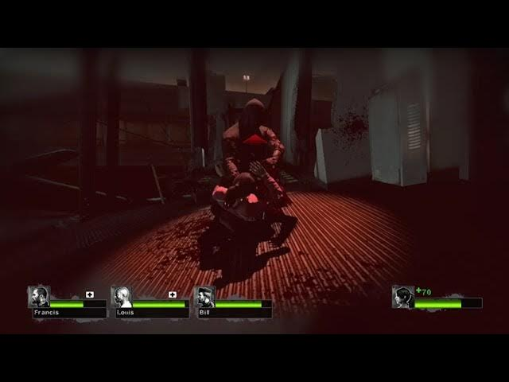
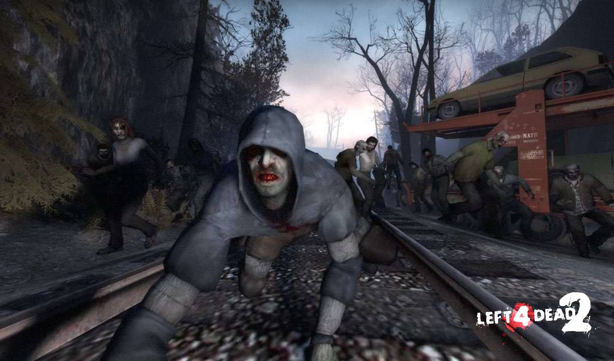

Este infectado apareció después de la propagación masiva de la gripe verde siendo un infectado especial que debuto en el primer juego Left 4 Dead y una de los más molestos durante las hordas zombis.
Contrarió a muchos infectados especiales que son extravagantes o su presencia se hace saber por los ruidos o gemidos que sueltan, el Hunter es un infectado especial demasiado discreto. Esto se pude ver desde la forma que el tiene para desplazarse a cuatro patas y no de manera convencional.
Normalmente los Hunters aparecen en sitios donde no hay tantos infectados o en caso contrario, durante una ola de infectados el puede aparecer para incapacitar a uno de ellos.

No es igual de letal que la Witch o el Tank, pero tiene una función similar al Smoker de mantener a un sobreviviente alejado del grupo. En este caso el Hunter taclea al sobreviviente y teniéndolo contra el suelo empieza a arañarlo bajando lentamente su vida.
Su cuerpo no sufrió una mutación tan grande al ser infectado por la gripe verde. Sus prendas siguen intactas a como estaba vestido en el momento en que la cepa entro en su cuerpo portando una sudadera azul oscuro y unos pants color arena. Algo notable del Hunter es su falta de calzado.

Se puede proteger del Hunter empujándolo en el aire antes de que este intercepte al sobreviviente, si se le empuja este va a retroceder y tendrá la guardia baja para atacarlo de cualquier manera. Si llegara a interceptar a un sobreviviente el Hunter no podrá defenderse de los demás del grupo hasta que el sobreviviente que atacó haya muerto por completo. Esta situación se puede aprovechar para matar al Hunter a costa de cierta cantidad de vida de un integrante del grupo.
La teoría más sonada del origen de este infectado especial dice que el Hunter antes hacía parkour debido a la gran habilidad que tiene al momento de atacar a los sobrevivientes. Más esta no hace sentido comparándola con las teorías que involucran a los demás infectados especiales tomando en cuenta que la gripe verde modifico algo en sus organismos. Fue entonces que otra teoría sugiere que el Hunter era un drogadicto por las vendas que envuelven sus brazos además de la apariencia que tiene.